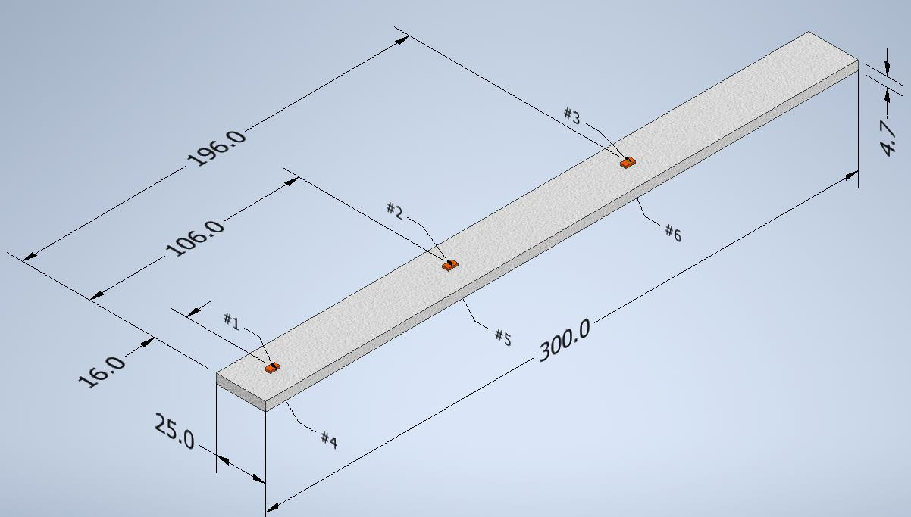
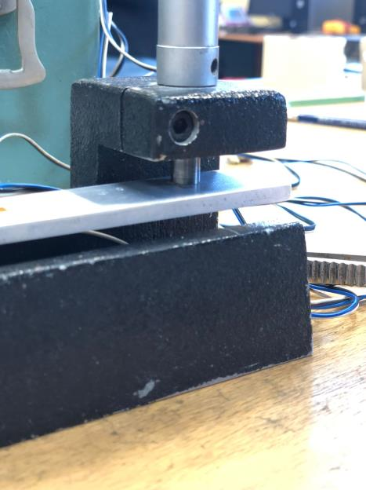
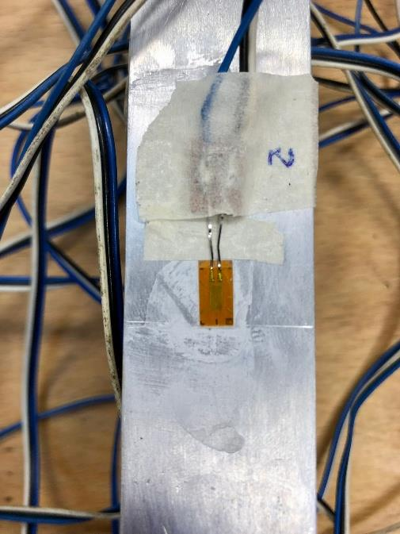
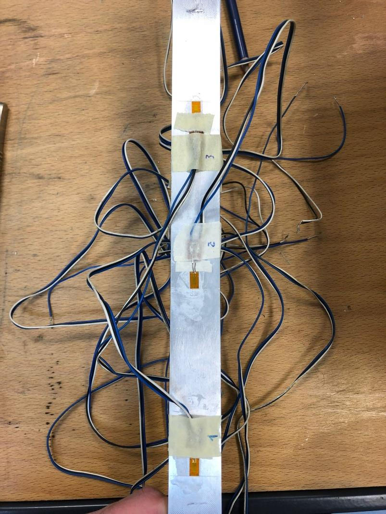
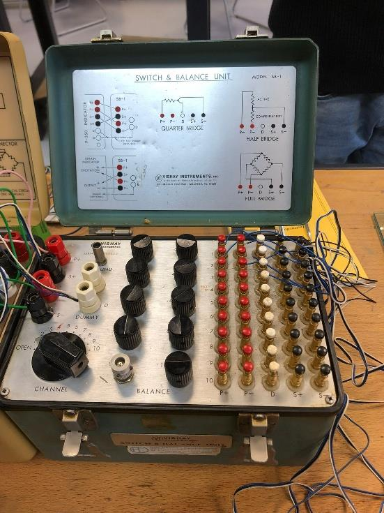
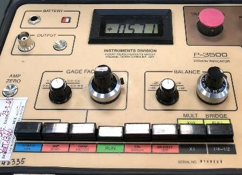
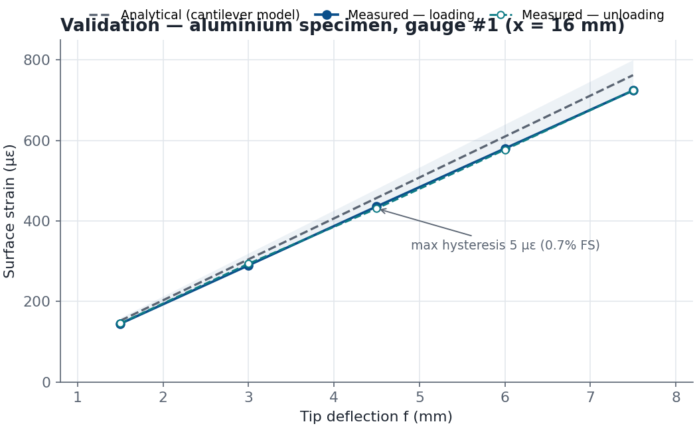
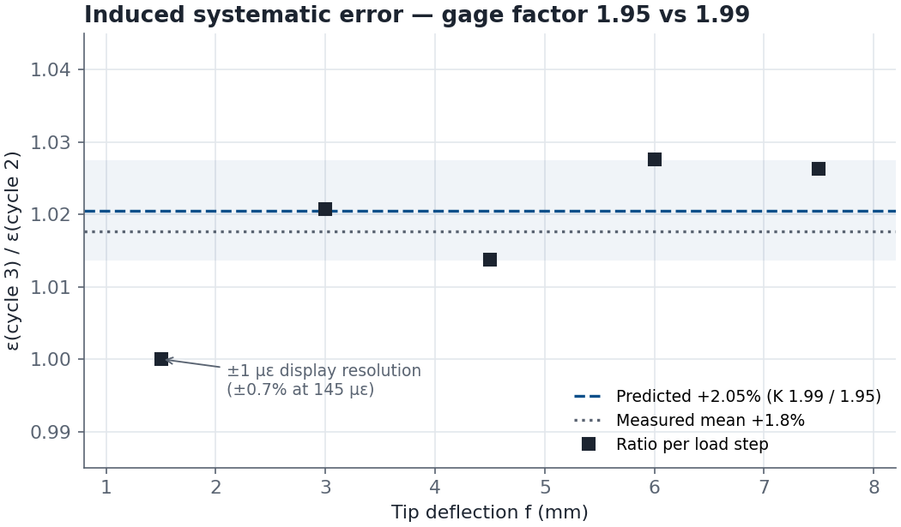
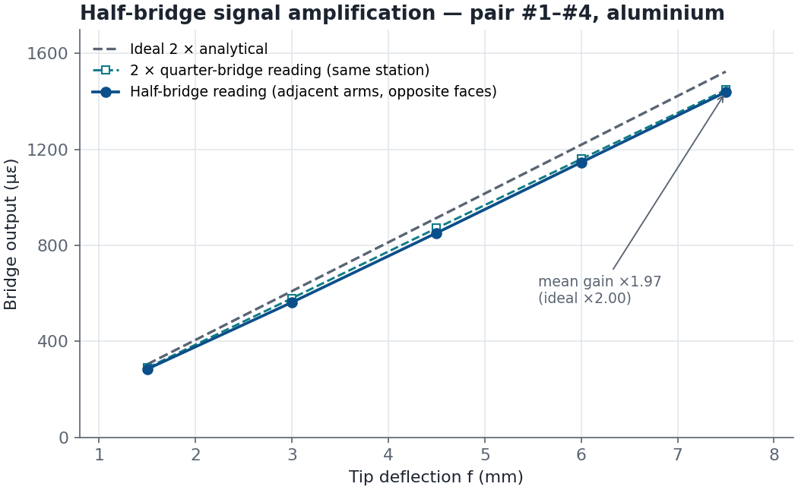

Design of Innovative Materials & Experimentation for Aircraft — Aerospace Laboratory · Politecnico di Bari · A.Y. 2024–2025
Experimental Metrology & Strain Gauge Testing
Strain-gauge instrumentation of aluminium, steel and titanium cantilever specimens under bending: bonding, wiring, quarter/half Wheatstone bridge acquisition, and statistical validation of the analytical beam model — including a deliberately induced systematic error to test the measurement chain.
Overview
The objective of this laboratory campaign was to evaluate the local surface strains of metallic specimens under bending loads with electrical resistance strain gauges, and to validate the analytical beam model against the measured data while accounting for instrumental uncertainty, signal noise and mechanical hysteresis.
The full metrological loop was run end to end: surface preparation and gauge bonding, soldering and wiring, bridge configuration and balancing, multi-channel acquisition through a scanning unit, deflection-stepped loading programmes, and a statistical treatment of the results that separates systematic effects from random scatter.
Specimens and Instrumentation
Three prismatic cantilever specimens (300 mm long, 25 mm wide) were tested, one per material, each clamped at one end and loaded by a micrometric screw at the free end:
- Aluminium — thickness b = 4.7 mm · E = 60–110 GPa (literature range) · 6 gauges at x = 16 / 106 / 196 mm, one per face
- Steel — thickness b = 0.95 mm · E = 210 GPa · 4 gauges at x = 35 / 120 / 165 / 175 mm
- Titanium — thickness b = 0.95 mm · E = 120 GPa · 4 gauges at x = 45 / 71 / 135 / 179 mm
The sensing elements were HBM 1-LY11-3/120A linear strain gauges: single constantan grid on a polyamide backing, 120 Ω nominal resistance, 3 mm measurement base, gage factor K = 1.99, cyanoacrylate-bonded, thermal response matched to ferritic steel (α = 10.8×10−6 K−1). Signal conditioning and readout were handled by a P-3500 strain indicator (bridge excitation, gage-factor setting, bridge balancing) coupled to a switch & balance unit, so that all gauges on a specimen could be scanned sequentially at each load step.
Installation Procedure
The installation was treated as a metrological operation in its own right, since a poor bond invalidates everything downstream. Each installation site was cleaned mechanically (abrasive paper, grit #320) and then chemically, with consecutive acid and base treatments repeated three times, an isopropyl wipe in between, and final layout marking of the alignment lines.
The gauges were bonded longitudinally with a drop of cyanoacrylate, each one held under adhesive tape for four minutes while the joint cured, and the tape peeled back at ≈45° to avoid lifting the grid. After insulating the terminals from the specimen with paper tape, the lead wires were soldered onto tinned contact bubbles — keeping the two joints separate to avoid shorts — and every channel was verified with a resistance check within 1% of the nominal 120 Ω before connecting it to the acquisition chain.
Bridge Configurations and Acquisition
Two Wheatstone configurations were used. In the quarter-bridge setup each reading comes from a single active gauge, with the instrument applying ΔR/R = K·ε through the gage-factor setting. In the half-bridge setup, two gauges bonded at the same station on opposite faces (one in tension, one in compression) were wired into adjacent arms: the two strain contributions add up, so the instrument reads an amplified signal — and the symmetric thermal contribution cancels.
Each test consisted of deflection-stepped loading cycles through the micrometric screw, with a gradual unload back to zero at every step, and a bridge balance (zeroing) before acquisition. Before the measurement cycles, conditioning cycles were run on the specimens to stabilise the gauge–adhesive system and progressively reduce mechanical hysteresis. Every measured value was then compared with the analytical prediction.
Analytical Reference Model
Schematising the rig as a cantilever of length L (clamp to load point, L = 255 mm) loaded by a tip force, the bending theory chain (moment distribution, section modulus, load–deflection relation and Hooke's law) collapses to a closed-form surface strain field:
ε(x) = (3/2) · (L − x) · b · f / L3
where f is the imposed tip deflection and b the specimen thickness. A useful property of this formulation is that the Young's modulus cancels out: the target strain depends only on geometry and deflection. This makes the experiment a clean metrological validation — any discrepancy between measured and predicted strain must come from the measurement chain or from the elastic-beam assumptions, not from an uncertain material constant.
Results
Validation against the analytical model
After conditioning, the loading and unloading branches of the measurement cycles track the analytical line closely. On the most stressed aluminium station (gauge #1, x = 16 mm), the loading branch sits at a mean deviation of −4.9% with a spread of only 0.35 percentage points across all five load steps: a tight, consistent bias rather than scatter — the signature of a small systematic effect (gauge-station alignment and effective-span tolerances) rather than random noise. The first conditioning cycle had instead deliberately explored larger deflections (up to f = 15 mm, ≈1380 με, implying surface stresses well above the 30–50 MPa yield band of the alloy): that cycle left the linear-elastic trend, so the amplitude was capped for all measurement cycles.
Hysteresis
Residual hysteresis between the loading and unloading branches was quantified cycle by cycle: after conditioning, the maximum load–unload gap at the primary station was 5 με — 0.7% of the 724 με full-scale reading — and the phenomenon was progressively trained out of the gauge–adhesive system, as expected for a stabilised installation.
Induced systematic error (gage factor manipulation)
To test the sensitivity of the chain to a mis-initialisation, the indicator's gage factor was intentionally set to K = 1.95 while the true gauge constant is 1.99. Since the instrument divides by the set constant, the predicted effect is a purely multiplicative over-read of 1.99/1.95 = +2.05%, flat across the load range. The measured cycle-to-cycle ratio confirmed it: mean +1.8%, with the residual gap consistent with the ±1 με display resolution of the indicator (±0.7% on the smallest reading). A flat ratio identifies a systematic, not random, effect.
Half-bridge amplification
The half-bridge configuration delivered the expected signal amplification: the opposite-face pair at the primary station read a mean ×1.97 of the quarter-bridge reading at the same station and deflection (×1.99 at full scale, against the ideal ×2.00), while the output stayed linear across the whole loading range. This closes the loop on bridge theory: quarter-bridge for simplicity, half-bridge when signal level and thermal cancellation matter.
Metrological Synthesis
- Systematic effects dominated the error budget — the −4.9% validation bias and the +2.05% K-offset are both stable across load steps, while random scatter stayed within the display resolution. Classifying each contribution as multiplicative or additive is what makes the error budget actionable.
- Hysteresis is a trainable specimen effect, not instrument noise: it shrank to ≤5 με once the gauge–adhesive system was stabilised by conditioning cycles.
- Bridge topology is a design choice: opposite-face pairing in adjacent arms bought a ×2 signal and thermal self-compensation at the cost of one extra bonded gauge — the standard trade-off in experimental stress analysis.
Skills
Gallery








